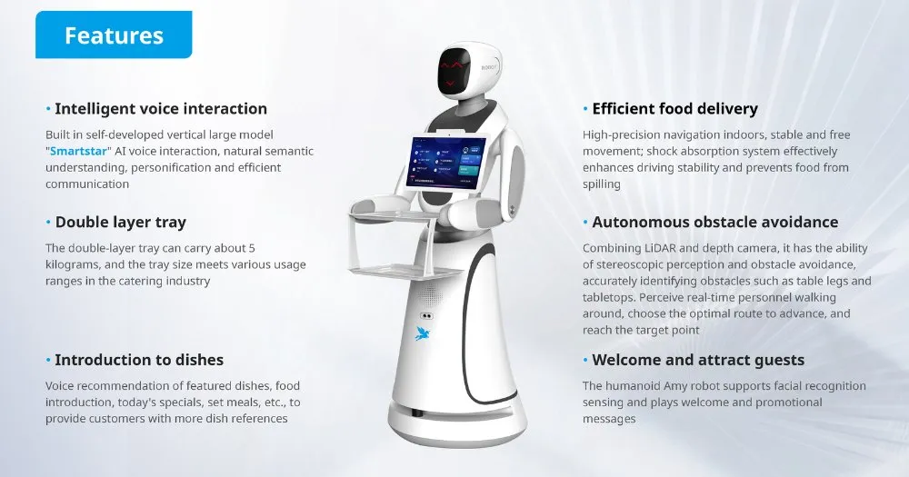

Servicerobotar
Vad är en servicerobot?
Servicerobotar är robotar som hjälper människor i vardagen, antingen hemma eller på offentliga platser.
Till skillnad från industrirobotar arbetar de nära människor och är byggda för att vara säkra och lätta att använda.
Funktioner
Servicerobotar kan städa, leverera varor, ta hand om patienter och guida besökare.
De används på hotell, sjukhus, restauranger och i privata hem.
Exempel på vanliga servicerobotar är robotdammsugare som Roomba och leveransrobotar.
Fakta
Marknaden för servicerobotar växer snabbt och förväntas vara värd miljarder kronor inom några år.
Robotdammsugaren är idag den mest sålda typen av servicerobot i världen.
Inom sjukvården används robotar redan för att leverera medicin och hjälpa vid operationer.
Framtid
I framtiden kan servicerobotar bli vanliga i nästan alla hem och ersätta många vardagliga sysslor.
De kan hjälpa äldre att leva självständigt längre och minska behovet av hemtjänst.
Med bättre AI och sensorer kommer de att förstå och reagera på mänskliga behov på ett naturligare sätt.
